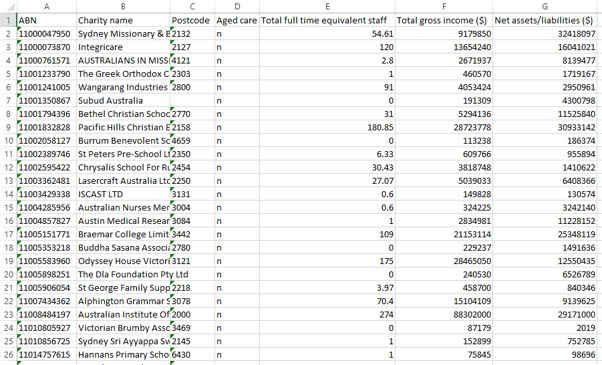

Preface
This interactive Workbook is your companion for the learning through doing component of the course. It is designed to guide your practice, deepen your understanding, and support your progress throughout the semester.
The primary learning resource for the course is the lectures and tutorials, however we do have an accompanying textbook Sharpe, De Veaux & Velleman, Business Statistics (4th edition). We do not cover the whole textbook in this course or in the order it is presented in the book. You are directed to the relevant readings from the textbook at the end of each chapter within this interactive Workbook.
Once you have watched the content recordings, you should consolidate your understanding by working through the material and tutorials in this interactive Workbook. The textbook readings will give you further knowledge and help to really solidify the materials covered each week.
The tutorials align with the modules covered in this course as listed in the Course Specification. At the end of each tutorial you will notice a Module Checklist and, in some cases, a Using Excel Checklist. Use these checklists to make sure that you have not missed an important concept as you work through the materials.
📊 Why Statistics Matters to Accountants
Statistics helps us make sense of the information we encounter every day.
At the heart of statistics is data, and the need to understand that data is what drives this entire field. The goal in this course is to give you tools to enable you to competently use and interpret statistics.
Accounting is not just about recording numbers - it is about interpreting information, making judgements, and supporting decisions under uncertainty. Statistics provides the tools accountants need to do this rigorously and responsibly.
Threshold / Expanded Competencies
To help guide you through this course and prevent the need to cram or skip material, we have developed a THRESHOLD / EXPANDED competencies framework. All materials in this course have been broken into THRESHOLD competencies and EXPANDED competencies.
A good toolbox needs a hammer, pliers, a wrench, and a screwdriver.
Likewise, in this course there are some concepts and skills which are essential for you to master — we call these Threshold Competencies.
To pass the course, you’ll need to demonstrate a full understanding of these Threshold Competencies.Threshold competencies in STA1004 refer to the key or fundamental ideas that are the core essential knowledge that a passing student must master.
Additional knowledge and skills associated with these concepts are referred to as Expanded competencies, which represent the knowledge required to achieve higher than a Pass (P) grade.
Mastery of expanded material will help students achieve a higher grade than a passing grade.
In this interactive Workbook, material related to Expanded Competencies are marked with an asterisk (*).
The goal of the Threshold/Expanded framework for delivering and assessing content is to provide students with a structure that allows for incremental mastery and achievement, building student confidence and momentum throughout the course. If you are feeling overwhelmed with a particular module of content, or if you are struggling to balance competing priorities in your life at some stage in the trimester, you can focus on mastering the Threshold content and still be able to continue progressing through the course. You can attempt the Expanded content once you feel grounded in the Threshold material or if you have more time for study later in the trimester.
What This Course Focuses On
The emphasis in Fundamental Statistics for Accountants is on:
- understanding and developing the basic concepts of statistical reasoning
- learning to use statistical software
The broad objectives of this course are stated below. More detailed overall objectives are given in the Course Specification. Specific objectives for each module are stated at the start of each module in the lectures.
Best wishes and good studying!
Overall Learning Outcomes
On completion of this course students should be able to:
Identify, explain and analyse the role of statistics in decision making (TCA08:LO1) (BBCM PO4).
Analyse and evaluate financial and non-financial data from a variety of sources using appropriate tools to present results in tables and charts as well as numerical descriptive measures for business decision-making purposes (TCA08: LO2, LO3 and LO4; PCA01: LO1) (BBCM PO3 or PO4).
Communicate clearly, effectively and concisely when presenting and discussing results from the analysis of data (PCA02: LO2) (BBCM PO3).
Use problem-solving skills, including a selection of parametric and non-parametric tests to analyse, apply and interpret appropriate confidence interval and hypothesis testing procedures for given business data and identify applications to business problems to measure and reduce uncertainty (TCA08: LO3) (BBCM PO1 or PO4).
Apply thinking skills to solve problems through identifying, making decisions and reaching well-reasoned conclusions applying the relevant regression and correlation coefficients for a data set using Excel and identify ethical issues within a given business situation. (TCA08: LO4; PCA01: LO2, PCA04: LO4) (BBCM PO1 or PO2 or PO4).
Apply basic regression and time series forecasting tools to business problems and identify ethical issues to social responsibility within the business environment. (CPA/NZ PCA04: LO4) (BBCM PO4).
1 Module 1
The focus is on understanding what data are, how they are collected, and how they should be summarised and interpreted responsibly.
1.1 Variables, Types of Data, and Sampling
Understanding data begins with understanding variables.
Statistical terminology
- Cases: the individuals or objects being studied
- Variables: characteristics measured on each case
- Data: the observed values of the variables
Types of data
| Data type | Description | Examples |
|---|---|---|
| Quantitative | Numerical values with meaningful units | Height (cm), pulse rate |
| Categorical (Nominal) | Categories with no natural order | Gender, faculty |
| Ordinal | Categories with a natural order | Likert scale responses |
| Identifier | Unique labels for each case | Student number |
Categorical variables are often coded numerically in software, but the numbers themselves have no numerical meaning.
Populations and Sampling Because studying an entire population is usually impractical, statistics relies on samples. Valid conclusions depend on three key ideas:
Sampling – samples should be representative of the population.
Randomising – random selection reduces bias and allows generalisation.
Sample size – larger samples tend to give more accurate results, but at higher cost.
Only random samples support valid statistical inference.
1.2 Visualising Data: One Categorical Variable
The distribution of a variable describes what values it takes and how often they occur. Graphs allow large amounts of data to be summarised clearly and patterns to be identified.
Numerical summaries
- Frequency tables for categorical variables
- Use pivot tables in Excel
Bar charts
- Used for categorical variables
- Bars do not touch
- Order bars logically (alphabetical or by size)
Pie charts
- Not recommended as difficult for the reader to fully understand
- Show parts of a whole
- Must include all categories (total = 100%)
- Best used sparingly and with few categories
1.3 Contingency Tables
When analysing two categorical variables, we use a contingency table (also called a two-way table or cross-tabulation).
Types of distributions
- Joint distribution: proportions of all cases in each cell
- Marginal distribution: proportions for one variable only (row or column totals)
- Conditional distribution: proportions within a subgroup
Assessing association
Two categorical variables are associated if the conditional distributions differ between groups. If the conditional distributions are similar, the variables are considered independent.
Graphical support
- Stacked bar charts are useful for comparing conditional distributions visually.
Always compare conditional distributions, not just raw counts.
1.4 Use, Abuse, and Misuse of Statistics
Statistics are powerful, but they can be misleading if used poorly or dishonestly.
Key ideas
- Results can be misinterpreted through poor sampling or misleading summaries.
- Graphs can strongly influence interpretation depending on:
- scale and axis limits
- graph type
- use of 3D effects or distorted perspectives
Good data visualisation principles
- Match the graph type to the data type
- Label axes clearly (variable names and units)
- Use honest scales (usually starting at zero)
- Avoid unnecessary decoration (especially 3D graphs)
- Aim to tell the truth and communicate clearly
No amount of visual design can fix poor or biased data.
Review Questions: Module 1
Once you have watched the lecture recordings you should be able to answer the following Threshold questions (solutions can be found at the end of this Workbook).
Write your answers in the boxes below. Tick the checkbox if you believe your answer is correct. Click Show model answers to compare.
(i) What is a variable? What is a value of a variable? Give examples.Model answers
(i) A variable is any characteristic of a case (an individual or object being described). A value of a variable is the observed measurement or category for that case. For example, for the variable height, values are measurements in cm or m. For country of origin, values may be Australia or Not Australia.
(ii) Quantitative variables take on numerical values for which mathematical operations (like +, ÷) make sense, with a unit of measurement. Categorical variables define categories. Ordinal variables are categorical with a natural order. Identifiers uniquely label each case.
(iii) Cross-sectional data measures values of multiple variables at a single point in time. Time series data measures one quantitative variable across regular time intervals.
(iv) Representative sample: random sample that reflects the population. Advantage = unbiased; Disadvantage = may be complicated to obtain. Convenience sample: includes individuals convenient for the researcher. Advantage = easy; Disadvantage = biased.
(v) A contingency (two-way) table visually shows the distribution of individuals across two categorical variables.
(vi) Marginal distribution = proportion in a row/column. Joint distribution = proportion in a cell. Conditional distribution = proportion in a row/column for a specific cell.
(vii) Possible reasons for a bad graph include: misleading scales, missing labels, too much clutter, inappropriate chart type, or truncated axes. See lecture notes for full details.
Tutorial Questions: Module 1
Note: * Indicates Expanded Competencies
1.5 Question 1: Experiments Verse Observational
An excerpt from a data set containing information about Australian Charities is shown below:

Q1(a)
For each of the variables listed in the spreadsheet:
- Identify the type of variable
- State the units, if appropriate
| Variable | Type | Units |
|---|---|---|
| ABN | ||
| Charity name | ||
| Postcode | ||
| Aged Care | ||
| Total full time equivalent staff | ||
| Total gross income | ||
| Net assets / liabilities |
Q1(b)
Is this cross-sectional or time series data?
1.6 Question 2: Generating an appropriate sample
Sampling
Bill Clinton (m)
Bill Cosby (m)
Bill Gates (m)
Bob Dylan (m)
Charles Yeager (m)
Colin Powell (m)
David Helfgott (m)
Dawn Fraser (f)
Evonne Goolagong (f)
Germaine Greer (f)
Gough Whitlam (m)
Harriet Tubman (f)
Henry Kissinger (m)
Janet Reno (f)
Jennifer Crowe (f)
Joan Sutherland (f)
John Glenn (m)
Laura Schlesinger (f)
Leonardo DiCaprio (m)
Manon Rheaume (f)
Mario Cuomo (m)
Michael Jordan (m)
Michele Pfeiffer (f)
Nelson Mandela (m)
Oprah Winfrey (f)
Paul Davies (m)
Paul Newman (m)
Pele (m)
Russell Crowe (m)
Samantha Riley (f)
Wayne Gardner (m)
Wynton Marsalis (m)
Stratified sampling involves taking simple random samples from each of a number of groups (strata) into which a population has been divided
This question can be done manually, or visually (see below if using the interactive workbook).
Suppose a random sample of eight people is required.
Using a random number generator (or interactive visual below), select a simple random sample (SRS) from the sampling frame defined above.
How many males and females are there in your sample?
Using a random number generator, select a second simple random sample.
How many males and females are there in this sample?
Compare your two samples: Did you expect the result you got? Explain your answer with reference to the sampling process.
*Using a random number generator, select a stratified random sample, stratified according to gender so as to contain equal numbers of males (m) and females (f).
*Describe, in detail, the steps you took to produce your stratified sample or the steps that were likely to have been taken if doing this manually.
*Why might you decide that a stratified sample is more representative?
https://stattrek.com/statistics/random-number-generator is one possible random number generator or the function RANDBETWEEN() in Excel
Interactive - Simple Random Sampling and Stratified Sampling
Below is an interactive tool for selecting simple random samples (SRS) and stratified samples from the given sampling frame.
This tool is only available if using the interactive workbook and not the pdf version
Controls
Use these settings to control how the random samples are generated.
Simple Random Samples (SRS)
Press each button to create a simple random sample.
Sample 1
Sample 2
Stratified Sample
Select the number of males and females in your straified sample and then press the button to create the sample.
Simulation: SRS vs Stratified Sampling
Press the button to compare the number of males selected in your SRS in comparison with your stratified sample (Choose how many simulations to run).
SRS Male Count Distribution
Stratified Male Count Distribution
Your Explanation
Quick Quiz
1. Why do two SRS samples often contain different numbers of males and females?
2. Why might a stratified sample be more representative?
3. In the simulation, what does the shape of the SRS sampling distribution tell you?
4. In the simulation, why is the stratified sampling distribution a single bar while the SRS distribution is spread out?
1.7 Question 3: Investigating the association between two categorical variables
Is there an association between the type of banking client (new or old) and their satisfaction level?
The following data was collected and organized into the Contingency Table (two-way table) below to see if there is an association between type of client (stated as New client (12 months or less) and Old client (longer than 12 months)) and the satisfaction level (stated as Satisfied and Dissatisfied) for 151 banking clients.
| New Client (12 mths or less) | Old Client (longer than 12mths) | Total | |
|---|---|---|---|
| Satisfied | 57 | 19 | 76 |
| Dissatisfied | 36 | 39 | 75 |
| Total | 93 | 58 | 151 |
Q3(a)
From the data in the study:
Q3(b)
From the data in the study (for each state if it is a joint, marginal or conditional percentage (rounded to 1 decimal place) as well as the answer):
Q3(c): Joint Distribution
In a two-way table, display the joint distribution of type of client and level of satisfaction (round to 1 or 2 decimal place).
Fill in the percentage table (percent of all 151 clients)
| Satisfaction / Type | New Client | Old Client | Total |
|---|---|---|---|
| Satisfied | |||
| Dissatisfied | |||
| Total |
Q3(d)
Using the joint distribution in (c), write 4 sentences describing what each of these 4 percentages mean (i.e. one of the sentences could be something like “90% of clients are new and dissatisfied”).
Tick the checkbox if you believe your sentence is correct.
Model answers
- 37.75% of clients are satisfied and are a new client.
- 12.25% of clients are satisifed and are an old client.
- 23.84% of clients are dissatisfied and are a new client.
- 25.83%of clients are dissatisfied and are an old client.
Q1(e): Marginal Distribution
Calculate, in percentages, and display, in a two-way table the following marginal distributions:
Marginal Distribution of Type of Client
Marginal Distribution of Satisfaction Level
| Type of Client | Total | ||
|---|---|---|---|
| New Client | Old Client | ||
| Satisfaction Level | |||
| Satisfied | |||
| Dissatisfied | |||
| Total | |||
Q1(f): Conditional Distribution
Using percentages,
- calculate the distributions of satisfaction level conditional on type of client (i.e. calculate the distribution of satisfaction level for new clients and then the distribution of satisfaction level for old clients).
- Calculate the distributions of type of client conditional on satisfaction level.
- Sketch a suitable graph to display the association between the two variables, using the information from (i) or (ii) (there are two ways of doing this, either using the information from your answer to f(i) or the information from your answer to f(ii) ).
(i) Satisfaction Level given Type of Client (percentages)
| Type of Client | ||
|---|---|---|
| New Client | Old Client | |
| Satisfaction Level | ||
| Satisfied | ||
| Dissatisfied | ||
| Total | 100% | 100% |
Answers accepted to 1 or 2 decimal places.
(ii) Type of Client given Satisfaction Level (percentages)
| Type of Client | Total | ||
|---|---|---|---|
| New Client | Old Client | ||
| Satisfaction Level | |||
| Satisfied | 100% | ||
| Dissatisfied | 100% | ||
(Satisfied total = 76; Dissatisfied total = 75.)
Answers accepted to 1 or 2 decimal places.
(iii) Sketch a suitable graph
Sketch a suitable conditional stacked bar chart by hand. Then compare your sketch with the model graphs below.

Q1(g)
*We used two categorical variables in this exercise and have examined the joint, marginal and conditional distributions. Based on this analysis so far (including your graph from part (f)), do you think there is an association between type of client and satisfaction level? Why or why not?
Type your answer in the box below.
Hint
Look at the conditional distributions. Are the percentages similar across the different levels of sleep, or are they noticeably different? If the percentages change depending on the level of sleep, this suggests an association.
Sample answer
Yes, there does appear to be an association between type of client and satisfaction level. When you look at the first conditional distribution table (Conditional Distributions of satisfaction level for each type of client), for example, you can see that 38.71% of new clients are dissatisfied whereas 67.24% of old clients are dissatisfied. These are very different percentages which indicates an association between satisfaction level and type of client (it matters what type of client it is as to how likely they are to be dissatisfied). Old clients are more likely to be dissatisfied than new clients.
Ideas to think about:
- Does this result make sense? Would you expect old clients to be more dissatisfied?
- Maybe the sample we took was not representative of all clients.
Saying that two categorical variables are not associated (or not related) is the same as saying they are independent.
Saying that two categorical variables are associated (or related) is the same as saying they are NOT independent.1.8 Question 4: Repeat Q3 using Excel
Using the data in Question 3, repeat the analysis using Excel for this course and then compare your answers in Question 3 with your output.
- Open the datafile Tutorial 1 Q4 in your Statistical Software (this file can be found in the Module 1 block on the StudyDesk, or downloaded from here).
Create a two-way table using Pivot Tables to display the data (see the Contingency Tables video). Put satisfaction level in rows and type of client in columns.
Display the joint distribution of type of client and satisfaction level in terms of percentages, in a two-way table. Note that this table also gives you the marginal distributions. Compare with your answers in Question 3.
Produce the conditional distributions (both Row Percent and Column Percent). Compare with answers in Question 3.
Construct a Stacked Bar Graph to display the association between type of client and satisfaction level. Compare to your sketch in Question 3.
(b) Two-way table (Pivot Table)

(c) Joint distribution (percentages)

(d) Conditional distributions

(e) Stacked bar graph

1.9 Textbook Readings
For extra clarification on materials in this module, see: Sharpe, De Veaux & Velleman (4th Edition)
Chapter 1
Chapter 2 (excluding Section 2.5 and Mosaic Plots)
Chapter 8
1.10 Further Practice from the Textbook
Answers to these questions are in the back of the textbook. If you require further explanation, please ask in the Module Content Discussion Forum on the StudyDesk.
Note: 1.23 means Sharpe, DeVeaux & Velleman (4th edition) Chapter 1, Exercise 23 at the end of the chapter.
• Questions 1.3, 1.17, 2.17, 2.23, 2.35(a,b,c,d* ), 2.37(a,b,c,d,e,f* )
Module 1 Checklist
Module 1 — Checklist
Using Excel Checklist
Module 1 — Using Excel Checklist
2 Module 2
The focus of this module is displaying one quantitative variable both visually and numberically.
2.1 Gathering Data
Types of Studies
There are two main types of studies:
- Observational studies
- Researchers observe and measure variables
- No intervention is applied
- Examples: surveys, polls, transactional data
- Can identify relationships but cannot establish causation
- Experimental studies
- Researchers impose treatments and observe outcomes
- Can establish cause and effect
- Explanatory variable (factor): the variable being manipulated
- Levels: the values of the factor
- Treatments: combinations of factor levels
- Experimental units: individuals receiving treatments
Observational studies can only show if variables are related.
Association vs Causation
- Association: Two variables move together
- Causation: One variable directly affects another
A key issue is the presence of lurking variables:
- A lurking variable affects both variables but is not measured
- Can create misleading associations
Example
Pet ownership and spending on cleaning products may be related, but a lurking variable (e.g. family with children) may explain the relationship.
Types of Observational Studies
- Prospective study: follows individuals into the future
- Retrospective study: uses past/historical data
Principles of Good Experimental Design
- Randomisation
- Randomly assign subjects to treatments
- Reduces bias and lurking variables
- Control
- Use control groups and placebos
- Allows fair comparison
- Replication
- Use many subjects or repeat the experiment
- Reduces variability due to chance
- Blocking
- Group similar individuals before assigning treatments
- Improves precision of comparisons
2.2 Displaying Distributions
The distribution of a quantitative variable describes what values the data take and how often those values occur.
Key ideas
- Raw data are often difficult to interpret without summarisation
- Graphical displays help reveal important patterns in the data
- Different graphs are suited to different data sizes and purposes
Common displays for one quantitative variable
Histograms
- Best for larger data sets
- Show the overall shape clearly
- Require careful choice of bin width
Boxplots
- Summarise the distribution using the five-number summary
- Excellent for comparing distributions across groups
- Do not show detailed distribution shape
It is important to include:
clear titles
labelled axes with units
appropriate scales
Describing Distributions (Graphically)
When interpreting a histogram or boxplot, describe:
- Shape
- Symmetric, left-skewed, right-skewed
- Number of peaks (modes)
- Centre
- Typical value
- Spread
- Range of values (exclude outliers if there are any)
- Outliers
- Unusual observations
Time Series Data
- Data measured over time at regular intervals
- Displayed using a time series plot
Use time series plots to: - Identify trends - Detect changes over time
2.3 Describing Distributions with Numbers
Summary Statistics
We describe quantitative data using:
Centre
Mean - Average value, sensitive to outliers
Median - middle number when dataset ordered, resistant to outliers
Spread
Range = max − min
Interquartile Range (IQR) = [Q3 − Q1] - Used with the median for skewed data or data with outliers
Standard deviation - Measures average spread around the mean, used with the mean for symmetric data
- Mean/SD: for symmetric distributions with no outliers.
- Median/IQR: for skewed distributions or distributions with outilers.
Quartiles and Five-Number Summary
Five-number summary:
- Minimum
- First quartile (Q1)
- Median
- Third quartile (Q3)
- Maximum
Used to summarise the entire distribution. These numbers for the boxplot.
Choosing the Right Summary
| Distribution Type | Centre | Spread |
|---|---|---|
| Symmetric | Mean | Standard deviation |
| Skewed / Outliers | Median | IQR |
2.4 Key Takeaways
- Observational studies show relationships, not causation
- Experiments are required for cause-and-effect conclusions
- Graphs help visualise distributions
- Always describe distributions using: Shape, Centre, Spread, Outliers
- Use appropriate numerical summaries based on distribution shape
Review Questions: Module 2
Once you have watched the lecture recordings you should be able to answer the following Threshold questions (solutions can be found at the end of this Workbook).
Write your answers in the boxes below. Tick the checkbox if you believe your answer is correct. Click Show model answers to compare.
(i) What are the main differences between an observational study and an experiment?Model answers
(i) Observational studies involve observing and measuring variables without intervention, while experiments impose treatments on individuals to observe effects. Observational studies can identify associations but cannot establish causation, whereas experiments can establish cause-and-effect relationships.
(ii) The four principles are:
Randomisation: randomly assign subjects to treatments (reduces bias).
Control: use control groups/placebos to compare results.
Replication: use many subjects to reduce variability.
Blocking: group similar individuals before assigning treatments.
Example: In a drug trial, patients are randomly assigned treatments, compared with a placebo group, repeated across many patients, and possibly blocked by age.
(iii) Three graphs used for quantitative variables are: histogram, boxplot, and time series plot.
(iv) An outlier is an observation that lies unusually far from the rest of the data values.
(v) If the units are metres: mean = metres, median = metres, standard deviation = metres, variance = metres² (squared units).
(vi) For skewed distributions: use median and IQR. For symmetric distributions: use mean and standard deviation.
Tutorial Questions: Module 2
Note: * Indicates Expanded Competencies
2.5 Question 1: Observational / Experiment
In recent years, the Therapeutic Goods Administration has introduced new guidelines for marketers of herbs and other natural substances who make health claims about their product. Brands of gingko extract claim to improve memory and concentration. A study of 230 healthy people over 60 years old were randomly assigned to a gingko pill or a placebo pill. All participants took tests for learning and memory before treatment started and again after six weeks.
(a) Is this an observational or experimental study? Explain your answer.
(b) What were the subjects and how many were there?
(c) Identify all factors and factor levels.
The two levels of this factor are gingko and placebo.
(d) What was the response variable(s)?
2.6 Question 2: Experimental Design
A researcher wants to know whether the difficulty of a task influences our estimate of how long we spend working at it. She designs two sets of mazes that subjects can work through on a computer — one set is easy and the other set is difficult. A group of 50 subjects are randomly allocated a set of mazes and work until told to stop (5 minutes, but subjects do not know this). They are then asked to estimate how long they worked.
(a) Draw a diagram to show the design of this experiment.
50 subjects → Random assignment →
Group 1 (25 subjects) → Easy mazes → Compare time estimates
Group 2 (25 subjects) → Difficult mazes → Compare time estimates
(b) Have the four elements of good experimental design been used here?
- Randomisation: Yes — subjects were randomly allocated to either easy or difficult mazes.
- Control: No — there is no group given no mazes (no treatment), so there is no control group.
- Replication: Yes — there are 50 participants, so results for both treatments are replicated.
- Blocking: No — subjects were not divided into groups with similar characteristics before treatments were allocated.
(c) *The researcher is interested to see whether gender has an effect on people's perception of how long it takes to do a difficult task. How could she account for this in her experimental design? Draw a diagram to show the revised design.
Block 1 (females) → Random assignment → Easy mazes / Difficult mazes → Compare
Block 2 (males) → Random assignment → Easy mazes / Difficult mazes → Compare
2.7 Question 3: Observational Study
A study found that senior citizens who report drinking diet soft drink regularly experience a greater increase in weight and waist circumference than those who do not drink diet soft drink regularly.
(a) From these results, can we conclude that drinking diet soft drink causes weight gain? Why or why not?
(b) *What could be a potential lurking variable? Explain how it would impact both the explanatory and outcome variables.
2.8 Question 4: Describing Distributions
The following represent the assignment results (out of 100) for a class of 20 Accounting students:
85, 38, 92, 93, 100, 88, 78, 79, 96, 81, 62, 39, 77, 78, 83, 91, 90, 85, 99, 97
(#fig:hist-assignment)Histogram of assignment results (n = 20)
For this data and Figure @ref(fig:hist-assignment) complete the following questions:
(a) Describe the distribution of Assignment Results in terms of shape, centre, spread and outliers.
Shape:
Centre:
Spread:
Outliers:
(b) What centre and spread would you use to describe this distribution? Why?
(c) Calculate the mean of the data set:
(d) Calculate the standard deviation of the data set:
(e) Calculate the median of the data set by hand:
Sorted: 38 39 62 77 78 78 79 81 83 85 85 88 90 91 92 93 96 97 99 100
(f) Why are the mean and median different/similar?
(g) Reproduce these results (graph and descriptive statistics) using Excel.
(h) What five numbers make up the five-number summary?
(i) Calculate Q1 and Q3:
Q1:
Q3:
Q1 = average of 5th and 6th values = (78+78)/2 = 78
Q3 = average of 15th and 16th values = (92+93)/2 = 92.5
(j) Calculate the IQR:
2.9 Question 5: Comparing Distributions
(#fig:boxplot-housing)Side by side boxplots of housing price data (n = 545)
The figure above shows the distribution of house prices for 545 furnished and unfurnished properties in a large city. Compare the distributions of prices of furnished and unfurnished properties in fewer than 100 words. You should mention shape, centre, spread, and outliers in your discussion.
Centre: The median price for furnished houses is higher than for unfurnished houses.
Spread: Furnished houses have a wider range of prices than unfurnished houses.
Outliers: Both groups have high-priced outliers, though furnished properties have more extreme values than unfurnished.
2.10 Question 6: Describing Distributions
(#fig:timeseries-exports)Value of Australian exports ($ million)
Figure @ref(fig:timeseries-exports) shows the value of Australian exports (measured in $AUD million).
(a) What type of graph is this?
(b) In less than 100 words, interpret the information in this graph.
2.11 Further Practice from the Textbook
Answers to these questions are located in the back of the textbook. If you require further explanation, please ask in the Module Content Discussion Forum on the StudyDesk.
- Questions 9.13(a,b*,c), 9.19(a,b,c*), 3.21, 3.23, 3.43, 3.75
2.12 Textbook Readings
For extra clarification on materials in this module, see: Sharpe, De Veaux & Velleman (4th Edition).
- Chapter 9 (only Sections 9.1-9.4)
- Chapter 3 (excluding Section 3.11)
Module 2 Checklist
Module 2 — Checklist
Using Excel Checklist
Module 2 — Using Excel Checklist
3 Solutions
3.1 Module 2
Question 1
In recent years, the Therapeutic Goods Administration has introduced new guidelines for marketers of herbs and other natural substances who make health claims about their product. Brands of gingko extract claim to improve memory and concentration. A study of 230 healthy people over 60 years old were randomly assigned to a gingko pill or a placebo pill. All participants took tests for learning and memory before treatment started and again after six weeks.
- Is this an observational or experimental study? Explain your answer.
It is an experimental study because treatments (in this case, either a gingko or placebo pill) were imposed by the researchers.
- What were the subjects and how many were there?
The subjects were the 230 healthy people over 60 years who participated in the experiment.
- Identify all factors and factor levels.
There is one factor: a pill
The two levels of this factor are gingko and placebo.
- What was the response variable(s)?
The response variables (or outcome variables) were the results on the learning and memory tests.
Question 2
A researcher wants to know whether the difficulty of a task influences our estimate of how long we spend working at it. She designs two sets of mazes that subjects can work through on a computer – one set is easy and the other set is difficult. A group of 50 subjects are randomly allocated a set of mazes and work until told to stop (5 minutes, but subjects do not know this). They are then asked to estimate how long they worked.
- Draw a diagram to show the design of this experiment.
Note that this is a completely randomized design.
- Have the four elements of good experimental design been used here?
• Randomization: subjects have been randomly allocated to either easy or difficult mazes (YES)
• Control: there is not a group that has been given no mazes (ie no treatment), therefore there is no control group (NO)
• Replication: there are 50 participants, so results for both treatments have been replicated (YES)
• Blocking: the sample of subjects has not been divided into groups with similar characteristics before the treatments were randomly allocated (NO)
- The researcher is interested to see whether gender has an effect on people’s perception of how long it takes to do a difficult task. How could she account for this in her experimental design? Draw a diagram to show the revised design of this experiment.
Blocking could be incorporated by dividing the 50 people into males and females, and then randomly allocating both easy and difficult mazes to both genders.
Question 3
A study found that senior citizens who report drinking diet soft drink regularly experience a greater increase in weight and waist circumference than those who do not drink diet soft drink regularly.
- From these results, can we conclude that drinking diet soft drink causes weight gain? Why or why not?
No, we cannot conclude that drinking diet soft drink causes weight gain. Causation can only be established from a well designed experiment. This study is observational, as there was no manipulation by the researcher – no treatments were imposed. We can only conclude that there is an association between these two variables. In order to be an experimental study, the researcher would need to randomly allocate either ‘drink diet soft drink’ or ‘not drink diet soft drink’ to participants, and then collect data on weight and waist circumference after a length of time.
- What could be a potential lurking variable? Explain how it would impact both the explanatory and outcome variables.
The explanatory variable in this scenario is ‘type of drink’ (either diet soft drink or other). The outcome (or response) variables are ‘weight’ and ‘waist circumference’. There are multiple possible lurking variables. One possible lurking variable is ‘health consciousness’. Someone who is health conscious may avoid diet soft drinks (due to concerns about the chemicals they contain), and may do lots of exercise (which would decrease their weight and weight circumference). On the flip side, someone who is NOT health conscious may eat lots of ‘junk’ food and do little exercise, which would increase their weight and waist circumference.
Question 4
- Describe the distribution of Assignment Results in terms of shape, centre, spread and outliers (including how many student results could be considered to be outliers).
- Shape: skewed to the left, unimodal (peak at the 90 mark)
- Centre: approximately 80-89 marks
- Spread: from 62 to 100 marks
- Outliers: There is one bin that represents potential outliers, but there are two cases in this bin (check frequency on the y-axis). I would state there are 2 outliers at 38 and 39 marks, however you may have stated that this is a continuation of the skew. If you said there were no outliers, then your spread would be from 38 to 100 marks.
- What centre and spread would you use to describe this distribution? Why?
As there is a skew (and outliers) it is probably best to use the median for the centre and the IQR for the spread. This is because skewness or outliers affect the mean and standard deviation and not the median and IQR.
- Calculate the mean of the data set.
Mean = 81.55 marks
- Calculate the standard deviation of the data set.
Standard Deviation = 17.32 marks
- Calculate the median of the data set by hand.
First put the numbers in order:
Median = the middle value once the numbers are sorted. Because we have an even number of values (n=20) we take the average of the 10th and 11th values (85+85)/2 = 85 marks.
This can also be written as (n+1)/2th position = 21/2 = 10.5th position = (85+85)/2 = 85 marks.
If we had an odd number of values the median will be the value of the single case in the middle position.
- Why are the mean and median different/similar?
They are not very different; however, the difference is due to the skewness and outliers which in this case ‘pull’ the mean to the left a bit making the mean a bit lower (81.55 marks) than the median (85 marks). The way the mean is calculated means that when the distribution is skewed left the mean will be smaller than the median and when the distribution is skewed right the mean will be larger than the median.
Reproduce these results (graph and descriptive statistics) using Excel.
What 5 numbers make up the five-number summary?
Minimum / Q1 / Median / Q3 / Maximum
- Calculate Q1 and Q3 of the data set by hand and then fill in the numbers of the five-number summary. Check these calculations using Excel.
Minimum: 38 marks
Q1: We only consider the lower half (lower 50% or first 10 values) of the data and the middle value is average of the 5th and 6th values = (78+78)/2 = 78 marks
Median: 85 marks (as calculated in part e))
Q3: We will only consider the upper half (upper 50% or last 10 values) of the data and the middle value is average of the 15th and 16th values = (92+93)/2 = 92.5 marks
Maximum: 100 marks
Five number summary = (38, 78, 85, 92.5, 100)
- Calculate the IQR of the data set by hand.
IQR = Q3 - Q1 = 92.5 – 78 = 14.5 marks
Question 5
The figure given the distribution of house prices for 545 furnished and unfurnished properties in a large city. Compare the distributions of prices of furnished and unfurnished properties in fewer than 100 words. You should mention shape, centre, spread, and outliers in your discussion.
Shape: Both furnished and unfurnished house prices have a right skew – there are some high priced properties that are skewing the data.
Centre: The average price for a furnished house is higher than that of an unfurnished house.
Spread: There is a wider range of prices for furnished houses than unfurnished houses.
Outliers: Both furnished and unfurnished houses have some very expensive properties (in comparison to the bulk of the data).
Question 6
Figure 2.3 shows the value of Australian exports (measured in $AUD million).
- What type of graph is this?
This is a time series plot – the value of a quantitative variable (value of Aus exports) has been measured at regular intervals over time.
- In less than 100 words, interpret the information in this graph. The value of Australian exports was fairly stable between 1914 and 1958, with only a slight rise in that time. After 1958, the rate of increase has been exponential (ie increasing more and more quickly), with the exception of a short stable period between 1998 and 2002.
The value of Australian exports was fairly stable between 1914 and 1958, with only a slight rise in that time. After 1958, the rate of increase has been exponential (ie increasing more and more quickly), with the exception of a short stable period between 1998 and 2002.